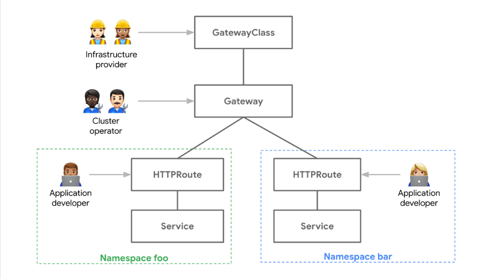
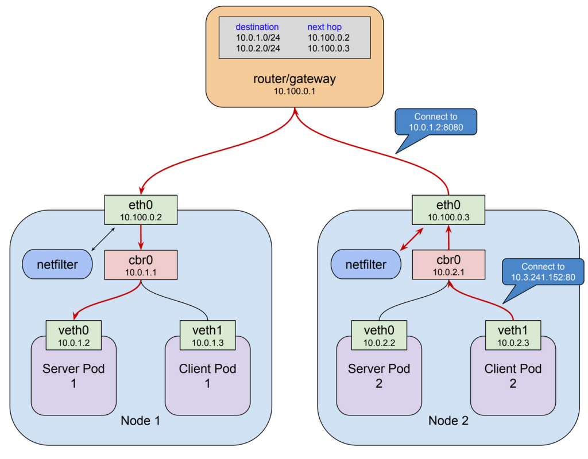
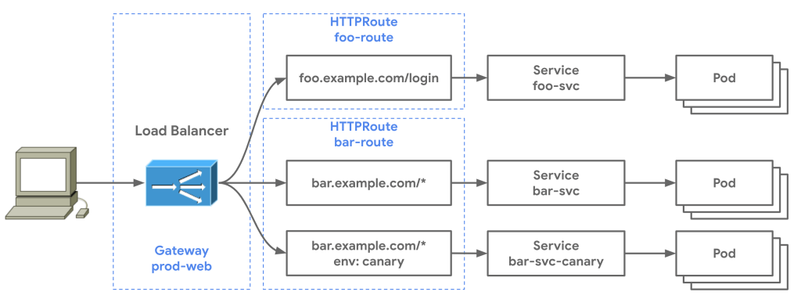

🌐 Why Create a Route in Kubernetes? 🌐

In today’s world of cloud-native applications and microservices, Kubernetes has become the go-to solution for orchestrating and managing containers. One of the essential elements to understand in Kubernetes networking is routes. If you're wondering, "Why should I bother with routes in Kubernetes?" — you’re in the right place! In this post, I’ll break down the basics of routes in Kubernetes and why they’re key to your application’s scalability and accessibility. 🚀
🎯 What Is a Route in Kubernetes?
In Kubernetes, a route is a way to make an application running in a pod accessible from outside the cluster. Routes work hand-in-hand with services to help expose your application externally so users and other applications can interact with it.
Imagine you’ve deployed a shiny new application within your Kubernetes cluster. Without a route, this application is essentially in a “walled garden” with no external access. A route provides that bridge to the outside world! 🌍

🛠 Why Create a Route? The Core Benefits
1️⃣ External Access to Services
-
Routes allow users and services outside the Kubernetes cluster to access applications within the cluster.
-
Whether you’re hosting a public-facing web app or an internal tool, routes ensure that traffic flows to the right destinations.
2️⃣ Load Balancing Made Simple
-
Routes can distribute traffic across multiple instances of a service, making sure your application handles load effectively and stays responsive.
-
With built-in load balancing, you can create a reliable and resilient user experience even under high traffic. 🌐💪
3️⃣ Enhanced Security
-
By defining routes, you can manage security and access control in your cluster, making sure only the right users and services can access specific applications.
-
Kubernetes routes support TLS termination to protect data in transit. So, your users get a secure experience every time they connect. 🔐
4️⃣ Seamless Scaling
-
With autoscaling, Kubernetes can add or remove application instances based on demand. Routes make sure that as instances come and go, they remain accessible without manual intervention.
-
This flexibility ensures your applications are always prepared for fluctuating workloads. 📈⬆️
5️⃣ DNS Mapping and Easy Access
-
Routes often allow custom DNS names, enabling you to create easy-to-remember URLs for each service.
-
This makes it super user-friendly and convenient for clients to connect, improving your service’s professionalism and usability. ✨
🚀 Creating a Route: Step-by-Step Guide
Here’s a quick snapshot of creating a route in Kubernetes. I’ll use OpenShift’s approach, but it’s similar across various Kubernetes distributions.
1️⃣ Define the Route: Start by creating a route definition in YAML. Specify the route type, service name, and target port.
apiVersion: route.openshift.io/v1
kind: Route
metadata:
name: my-app-route
spec:
to:
kind: Service
name: my-app-service
port:
targetPort: 8080
2️⃣ Deploy the Route: Apply the route definition file to your Kubernetes cluster.
kubectl apply -f my-app-route.yaml
3️⃣ Verify the Route: Check if your route is active by using kubectl commands. Once your route is working, you’ll see an external URL pointing to your application.
kubectl get routes
🚀 And that’s it! You now have a route in Kubernetes connecting the outside world to your application.

💡 Final Thoughts
Creating a route in Kubernetes is a simple yet powerful step that opens up your application to the world. With routes, you get easy access, seamless scaling, and secure connections. Whether you’re building a personal project or scaling an enterprise-grade app, routes will ensure that users and services have reliable, secure access to your application. 🌐✨
If you're just diving into Kubernetes, start exploring routes — it’s a critical tool in your DevOps toolkit!
References
https://gateway-api.sigs.k8s.io/guides/http-routing/
https://kubernetes.io/blog/2021/04/22/evolving-kubernetes-networking-with-the-gateway-api/
https://medium.com/google-cloud/understanding-kubernetes-networking-ingress-1bc341c84078
🔗 Connect with me:
Happy routing! 🎉
Imported from rifaterdemsahin.com · 2024